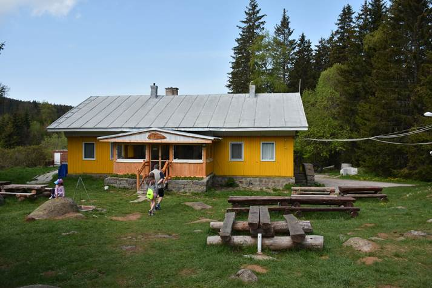

|  | Хижа Офелиите, Витоша, София разполага с леглова база от 14 места. Ценови диапазон: 9 лв. - 18 лв. на легло. Обектът се намира в природен парк Витоша. В непосредствена близост са ски писти Ветровала и Офелиите с надморска височина 1600 м. На 20 мин. с кола от София. В околностите може да се видят каменните реки (морените), както и еко пътеки, по които се стига до други забележителности (Яворова поляна и др.). Хижата предлага чудесни условия за почивка. Организират се рождени дни, фирмени партита и банкети. |